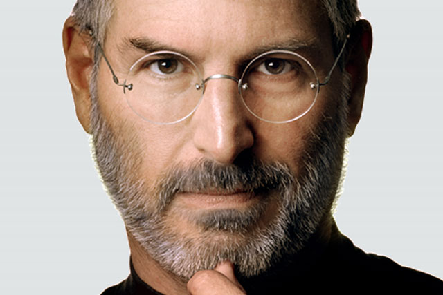

1995-2011
"Design is not
just want it looks
like and feels like.
Design is not how it
work"
Steven Paul Jobs (February 24, 1955 – October 5, 2011) was an American businessman, inventor, and investor best known for co-founding the technology company Apple Inc. Jobs was also the founder of NeXT and chairman and majority shareholder of Pixar. He was a pioneer of the personal computer revolution of the 1970s and 1980s, along with his early business partner and fellow Apple co-founder Steve Wozniak.
Jobs was born in San Francisco in 1955 and adopted shortly afterwards. He attended Reed College in 1972 before withdrawing that same year. In 1974, he traveled through India, seeking enlightenment before later studying Zen Buddhism. He and Wozniak co-founded Apple in 1976 to further develop and sell Wozniak's Apple I personal computer. Together, the duo gained fame and wealth a year later with production and sale of the Apple II, one of the first highly successful mass-produced microcomputers.
Jobs saw the commercial potential of the Xerox Alto in 1979, which was mouse-driven and had a graphical user interface (GUI). This led to the development of the unsuccessful Apple Lisa in 1983, followed by the breakthrough Macintosh in 1984, the first mass-produced computer with a GUI. The Macintosh launched the desktop publishing industry in 1985 (for example, the Aldus Pagemaker) with the addition of the Apple LaserWriter, the first laser printer to feature vector graphics and PostScript.